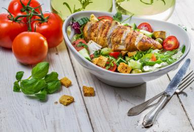

Welcome to Blog
Recetas de cocina fáciles paso a paso - Recetas de Escándalo
2021.07.06 18:06Menu Inicio Recetas de Cocina Aperitivos, tapas y pinchos Carnes y aves Pescados y mariscos Sopas y cremas Salsas y guarniciones Arroces Ensaladas Verduras Huevos y tortillas Legumbres Masas Pasta Bocadillos y sandwiches Postres y repostería Bizcochos Cremas, coberturas y rellenos Dulces Tradicionales Galletas Magdalenas, Cupcakes y Muffins Postres con fruta Postres de cuchara Tartas Tortitas y crepes Bebidas Zumos y Refrescos Naturales Batidos Leches Vegetales Smoothies Cócteles y Bebidas Alcohólicas Gastronomía Eventos Recetas de Verano Desayunos Recetas de Navidad Recetas con Thermomix Vídeos Libros Colaboraciones Contacto
Recetas de cocina
» Recetas de cocinaTostas de hojaldre con sashimi de salmón y ensalada de col y manzana
| 4 | 40 minUna de las cosas más inspiradoras para mi en la cocina es inventar y preparar aperitivos y canapés de todo tipo, jugando con los ingredientes e ideando nuevas combinaciones, y eso es lo que ha pasado con esta receta. Me gusta mucho pensar en tostas y combinar ingredientes crujientes con otros más cremosos y crear
Seguir leyendoReceta de fajitas de pollo y verduras con aguacate, sencillas y ricas
| 4 | 60 minLa comida mexicana está muy extendida por el resto del mundo y somos muchos los que consumimos y preparamos habitualmente los más típicos platillos mexicanos en nuestras propias casas. Eso si, a veces podemos encontrar los ingredientes de forma sencilla como en esta receta y en otras tenemos que adaptar un poco las recetas con
Seguir leyendoColcannon irlandés, un puré de patatas, col y mantequilla delicioso
| 4 | 50 minMuchas veces se pueden encontrar recetas tradicionales similares en diferentes países, y ese es el caso de esta receta que tantísimo me recuerda al típico trinxat de col y patata catalán. Es curioso ver además las sutiles diferentes en este tipo de platos y es fantástico poder preparar ambos en casa para probarlos y compararlos .
Seguir leyendoReceta de salsa ponzu casera, un aderezo japonés fantástico
| 300 ml | 10 minEs genial preparar salsas en casa pero cuando se trata de recetas de otros países o culturas, sobre todo cuando nos quedan muy lejos, a veces es complicado conseguir los ingredientes que necesitamos. Con las elaboraciones asiáticas, al menos en España tenemos la gran suerte de que podemos encontrar en la mayoría de las ciudades
Seguir leyendoLasaña de carne a la boloñesa con Thermomix y su bechamel, ¡irresistible!
| 4 | 60 minExisten infinidad de elaboraciones con pasta y al menos una vez a la semana me encanta preparar un plato con ella. Reconozco que recurro muchísimo a unos sencillos espaguetis con tomate y queso o unos macarrones y a veces les añado atún, pero cuando quiero preparar un platazo de pasta y lucirme lo cierto es
Seguir leyendoCrema de calabaza casera, saludable e irresistible
| 4 | 45 minUna de mis preparaciones preferidas con verduras durante la época más fría del año son las cremas, ya que calentitas resultan de lo más reconfortantes. Aún así, las cremas también se pueden tomar templadas o incluso frías y siguen estando riquísimas. Lo mejor de todo es que se pueden combinar distintos tispos de verduras como
Seguir leyendoCómo hacer masa de crepes dulces o salados, muy fáciles y de 10
| 6 uds | 20 minSiempre le he dado importancia al desayuno y, aunque entre semana el tiempo escasea, intento que tenga algo especial aunque sea sencillo y fácil de preparar y sobre todo que vaya repleto de cosas que me gustan. Por eso suelo tener en mente recetas como ésta, que puedes dejar listas con antelación para que el
Seguir leyendoFetuccini Alfredo, un plato de pasta con queso irresistible
| 4 | 25 minLas recetas de pasta son prácticamente infinitas ya que podemos combinar muchísimos tipos de pasta con una gran variedad de salsas, aliños y elaboraciones, por eso en casa no hay semana que no prepare un plato de pasta. A la hora de cocinarla gusta mucho experimentar y dar con nuevas recetas pero también es fantástico
Seguir leyendoQuiche de espinacas y queso de cabra con masa quebrada casera
| 4 | 90 minLas tartas me fascinan y una de las cosas que más me gusta es que no solo las hay dulces sino también saladas, y quedan espectaculares. Ese es el caso de las quiches, un tipo de tarta salada típica de la cocina francesa y cuya característica principal es que la base es de masa quebrada
Seguir leyendoBizcocho de zanahoria con Thermomix, aromático y jugoso
| 12 | 60 minPreparar postres y dulces en casa es fantástico ya que resulta entretenido (incluso muchos de ellos son ideales para elaborarlos con niños), controlas al máximo los ingredientes que llevan y puedes adaptarlos a tu gusto. Y si te decantas por un bizcocho casero enseguida comprobarás con qué poco esfuerzo puedes conseguir un postre de 10 .
Seguir leyendoAlcachofas a la plancha, riquísimas y con trucos para que no se oxiden
| 4 | 45 minLa alcachofa es de mis verduras preferidas y aprovecho cuando está en temporada (suele ir de Noviembre a Marzo) para comprarla habitualmente y cocinarla de cualquier forma ya que siempre queda buenísima. Quizás lo que menos atrae de ella es la limpieza previa de hojas que necesita, pero con esta receta vas a descubrir que
Seguir leyendoReceta de cardo a la Navarra tradicional con jamón y cebolla
| 4 | 60 minDisfruto mucho cocinando y por supuesto comiendo verduras, sobre todo cuando están en temporada. Es el mejor momento para consumirlas porque las encontramos con su mejor sabor y textura y también suelen tener un precio más económico. Eso si, si no las encontramos frescas una buena alternativa son las conservas de calidad, y por eso
Seguir leyendoCaballa al horno con cebolla y perejil. Receta muy fácil, saludable y rica
| 4 | 40 minPensando en platos sencillos, saludables y completos para el día a día muchas veces opto por preparar un pescado al horno. Suelo cocinar muchas veces unas doradas, unas lubinas o alguna corvina, pero aprovecho cuando algunos pescados están en temporada para prepararlos más durante esa época. Ese es el caso de la caballa, que de
Seguir leyendoCrema de zanahoria con Thermomix, cremosa y muy rica
| 6 | 45 minCalientes y reconfortantes, frías y refrescantes ¿cómo te gustan las cremas de verduras? A mi de cualquier forma y adaptándolas a la época del año, de hecho es una de mis elaboraciones preferidas con verduras y lo mejor de todo es que hay combinaciones de todo tipo. Esta crema de zanahoria con Thermomix queda cremosa
Seguir leyendoReceta de crumble de manzana o apple crisp, un postre fantástico
| 12 | 60 minExisten infinidad de postres con manzana y, como junto con el chocolate y el hojaldre es de mis ingredientes preferidos para la repostería, no me canso de preparar dulces de todo tipo con las manzanas como protagonistas. Ya simplemente comer una manzana sin más es todo un placer, y en la repostería su aroma, su
Seguir leyendoHuevos benedict o huevos benedictinos, ¡te van a quedar perfectos!
| 2 | 30 minCuando me imagino un desayuno completo de fin de semana siempre pienso en algún plato que lleve huevos, cocinados de la forma que sea porque siempre quedan riquísimos. Cocidos, fritos, en tortilla y por supuesto pochados o escalfados, y precisamente estos últimos son los protagonistas de este súper desayuno. Con esta receta de huevos benedict
Seguir leyendoBerenjenas asadas al horno, tiernas y deliciosas
| 4 | 45 minMe encanta cocinar platos con verduras en los que una verdura en concreto es la absoluta protagonista, como sucede en este caso. Es por ello que debemos conocer las mejores técnicas de cocina para elaborar cada verdura y así sacarle el máximo partido, y sin duda alguna en el horno muchas de ellas quedan geniales .
Seguir leyendoLas 31 salsas caseras imprescindibles en la cocina (y muy fáciles)
Desde que empecé a publicar mis recetas en el blog siempre he tenido un empeño especial en las salsas caseras, ya que si se elaboran en casa quedan increíbles. Además suelen ser en su mayoría muy fáciles y rápidas de elaborar y así controlamos perfectamente la calidad y tipo de ingredientes que contienen. Hay muchísimas
Seguir leyendoReceta de masa de crepes con Thermomix, ¡quedan de 10!
| 6 uds | 20 minHay platos y elaboraciones que solemos asociar a un momento concreto para comerlas, por ejemplo para el desayuno, para el postre o la cena, y sin embargo pueden ser más versátiles de lo que nos imaginamos. Ese es el caso de esta receta que sirve tanto para dulce como para salado y podemos acompañarla con
Seguir leyendoEscudella i carn d’olla. Receta catalana tradicional paso a paso
| 8 | 180 minLas recetas de cuchara tradicionales son mis favoritas para los meses más fríos porque siempre resultan de lo más reconfortantes y además suelen ser, como en este caso, un plato completo e incluso contundente y repleto de sabor. Lleva su tiempo prepararlas porque se recurre a ese lento chup chup que tanto nos gusta pero
Seguir leyendo 1 2 … 47 →
Buscar recetas
¿Quiénes somos?
Somos Natalia y Manuel y nos encanta la gastronomía y el mundo online. ¡Conócenos más!
¡Suscríbete!
Recibe semanalmente en tu correo las últimas recetas publicadas en Recetas de ¡Escándalo!
¡Suscribirme!Recetas Más Populares
Bizcocho de naranja esponjoso, casero y fácil Tartar de atún rojo y aguacate, una receta exquisita Cómo hacer magdalenas caseras y esponjosas. Receta tradicional Fabada asturiana, la receta tradicional y auténtica Bizcocho de yogur natural muy esponjoso Entrantes, aperitivos y canapés para Navidad, fáciles y originales Cómo hacer salsa barbacoa casera, fácil y rápida Strudel de manzana fácil. Receta tradicional alemana Patatas al microondas Tataki de atún rojo con sésamo Bizcocho de zanahoria y nueces fácil Tartar de salmón ahumado y aguacate Tarta de la abuela: tarta de chocolate, galletas y natillas, muy fácil Cómo hacer tortitas americanas caseras o pancakes, la mejor receta Salsa roquefort sin nata Bizcocho mármol de yogur y chocolate, casero y esponjoso Salsa agridulce china casera Cómo hacer salsa a la pimienta verdeYa la venta Bocaditos de ¡Escándalo!
Últimas recetas
Tostas de hojaldre con sashimi de salmón y ensalada de col y manzana Receta de fajitas de pollo y verduras con aguacate, sencillas y ricas Colcannon irlandés, un puré de patatas, col y mantequilla deliciosoBuscar por Ingredientes
Encuentra recetas por los ingredientes que contienen
Te recomendamos
Tarta de queso al horno Ensalada de pasta Dorada al horno Boquerones en vinagre Mejillones al vapor Puré de patatas casero Pulpo a la gallega (a feira) Patatas a lo pobre Ensaladilla rusa Guacamole casero¡Suscríbete!
Recibe semanalmente en tu correo las últimas recetas publicadas en Recetas de ¡Escándalo!
¡Suscribirme! Inicio ¿Quiénes somos? Colaboraciones Suscripción Aviso Legal Política de Cookies Política de Privacidad Configurar Privacidad Contacto Política de cookie (UE) Copyright © 2021 Recetas de Escándalo .